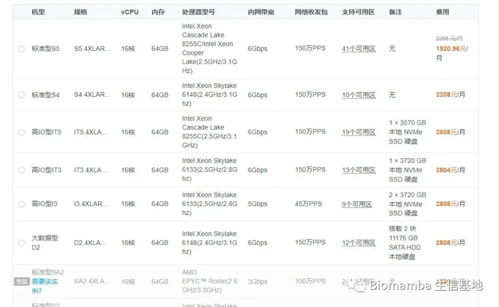

如何拥有一台服务器，且不用自己搭建维护
原文：https://mp.weixin.qq.com/s?__biz=MzAwMzIzOTk5OQ==&mid=2247504032&idx=1&sn=e8af21713884497e8476a4fd8d58d567&chksm=9b3ca9f0ac4b20e6a0965331cf971f859e104aa4fb2b35c7a3406869f0045d7163029c2744ee#rd 合集：服务器

西柚云服务器
随着现代网络技术的不断发展，技术也在不断的创新，现在网络云计算技术已经可以让不同地方的同事连接在云服务器上工作。也正是如此，服务器的应用也可以通过云计算技术在云端上去运行，而且不会因服务器庞大的机身 而导致占用太大的空间。使用过实体服务器 的朋友都知道，服务器不仅要占用到很大的空间，还会产生很大的噪音 ，如果在家里或者单位上使用实体服务器，有专门的房间去放置还好。如果实体服务器就放置在旁边使用，那嗡嗡作响的声音就好像一个小型加工厂一样，让人听起来十分糟心。即使加装了静音机箱，依然是掩盖不住服务器散热时刺耳的噪声。然而，通过云技术的加持，实体服务器上存在的痛点，在不影响性能的情况下，都可以去根除。西柚云超算科技有限公司旗下的子品牌西柚云，在云服务器上运营多年，十年技术沉淀 。西柚云深耕生物信息学云服务器市场多年，深知用户所想所需，强大的技术团队，多年累积的经验以及紧跟热点需求的定制和升级服务，这些都是西柚云可以提供给这个行业的差异化优势，造就了可支持各种互联网使用场景的高品质的云技术平台。定制版独享服务器对比同配置下的其他品牌，价格更低、产品性价比高。以12核 128G内存 5T磁盘的独享配置为例，西柚云定制独享版本只需6000元/年，相同配置下其他品牌的独享版本，费用高达万元/年。注册下单链接：https://biomamba.xiyoucloud.net/下单前可添加微信Biomamba_kefu领取优惠 ！
西柚云基本只需要1/4的价格就能买到4~5倍的配置，给大家看看某大厂的报价，64GB内存一个月就要两千了：

定制版独享云服务器有什么好处?
1、支持定制 ！打造专属于你的完美服务器！可将具体需求发给微信Biomamba_kefu。
2、不会因为别人的带宽占有率增大，而导致自己网站的带宽不够用。独享服务器的网络有专门线路去分配网络资源，网络不共享使用，特别配置了500兆 的专线网络，速率达标。
3、拥有最高管理员权限，可以随意添加用户 ，租一台服务器整个实验室都能用，控制权都在自己手里。
4、拥有完全独立的环境以及完全独享的资源 ，不会出现共享服务器高峰期资源不足的情况，独享的资源带来的高效率可以有效提高产出的速度。
5、会有专业的技术人员，定期去维护服务器，对比实体服务器可以免去对机器维护 的步骤，您只负责用，维护交给专业的人去打理。云储存采用分布式存储三副本数据备份 ，更可靠，存的安全，用着放心。
详细描述及图文教程
具体配置的服务器每年的租用价格，需要购买的可以文末加客服微信先联系一下 ，目前谈下来最终的方案是标价-200￥、且有额外返现（购买后加微信Biomamba_kefu返现）。 注册购买链接：https://biomamba.xiyoucloud.net/(粘贴至浏览器打开，不要从微信中跳转)现在通过优惠码[biomamba]可以立减200￥ ，填写优惠码：


● 另外，可咨询文末微信号领取返现福利(200￥折扣可与返现可叠加)，注册链接：
https://biomamba.xiyoucloud.net/
西柚云的几点好处：1、价格优势上面已经给大家说过了，何况还有免费版供大家学习2、第二个好处是大家的设备、R语言、Rstudio的版本与我有所出入，有相当一部分同学运行我的代码时由于版本的问题会遇到报错，综合这两个问题，初步有一个解决的办法——共享服务器。使用这个服务器，我们都可以在同样的环境下进行操作，每台服务器已经预先安装了我使用过的全部R包，直接加载即可，排除版本问题并拥有足够的配置。以后我们的课程都会在西柚云中进行录制。 这里放一个实际使用时的测试视频：
3、网速方面也比较给力我下载文件时最大速度可以超过100M/S。就我个人来说，就当买个网盘用来高速传输也是很划算的。没有梯子的同学也可以试试用西柚云下一些墙外的东西。

下面演示一下基本操作流程和优势！没有用过服务器、不会安装与连接的同学也不用担心，会有客服手把手教学 ！1、下载并安装finalshell http://www.hostbuf.com/downloads/finalshell_install.exe这一步应该不用多说，下载后双击运行按默认参数点下一步直至完成安装即可。
2、连接服务器：（1）创立连接：第一次创建连接的时候可能有点麻烦，需要按以下1、2、3号箭头依次点击。

在弹出的窗口中依次填入购买成功页面显示的以下信息后点击确定。 关闭finalshell并重启后即可通过双击快速连接访问服务器，以上的信息填写一次就好啦，以后直接点击这个快速连接即可：
关闭finalshell并重启后即可通过双击快速连接访问服务器，以上的信息填写一次就好啦，以后直接点击这个快速连接即可：
 进来以后就是Linux的页面：
进来以后就是Linux的页面：

可以看出服务器的中还有722GB的内存处于可获取状态，这个配置对大家来说肯定绰绰有余，无论运行什么样的单细胞数据应当都不在话下。

3、文件传输老粉丝看过我这个教程（Linux与Windows实现文件交互的几种方式）的应该知道，如果用Putty连接Linux，文件传输还得额外安装一个FileZilla。但是Finalshell是集命令行和文件传输于一体的远程控件： （1）点击打开文件传输页面

（2）即可通过下面的列表进行文件传输

4、使用R语言
(1)R
用过Linux的都知道，在命令行敲一个R即可进入R环境，但是这种方式不太好操作。不推荐。

（2）Rstudio
购买产品后的页面会提供一个网页版Rstudio的链接，复制到浏览器打开即可，下面的红色箭头即可上传文件，用起来比较方便


如何联系我们

 公众号后台消息更新不及时，超过48h便不许回复读者消息，这里给大家留一下领取资料及免费服务器(有root权限的共享服务器,注册即送200￥)的微信号 ，方便各位随时交流、提建议（科研任务繁重，回复不及时请见谅）。此外呼声一直很高的交流群 也建好了，欢迎大家入群讨论：
公众号后台消息更新不及时，超过48h便不许回复读者消息，这里给大家留一下领取资料及免费服务器(有root权限的共享服务器,注册即送200￥)的微信号 ，方便各位随时交流、提建议（科研任务繁重，回复不及时请见谅）。此外呼声一直很高的交流群 也建好了，欢迎大家入群讨论：
大家可以阅读完这几篇之后添加给生信入门初学者的小贴士 如何搜索公众号过往发布内容

 您点的每个赞和在看，我都认真当成了喜欢
您点的每个赞和在看，我都认真当成了喜欢